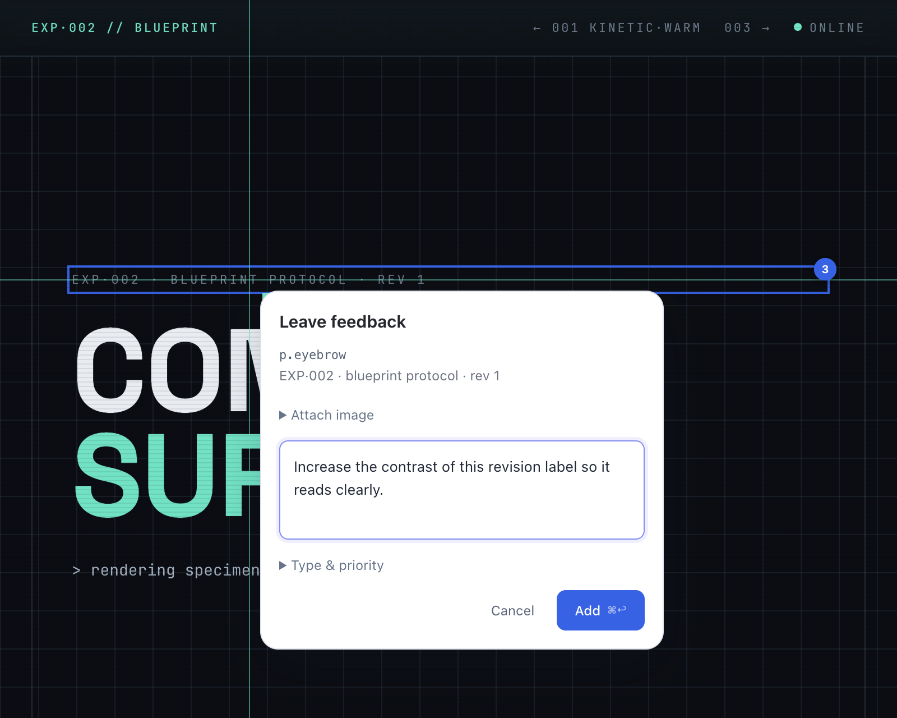
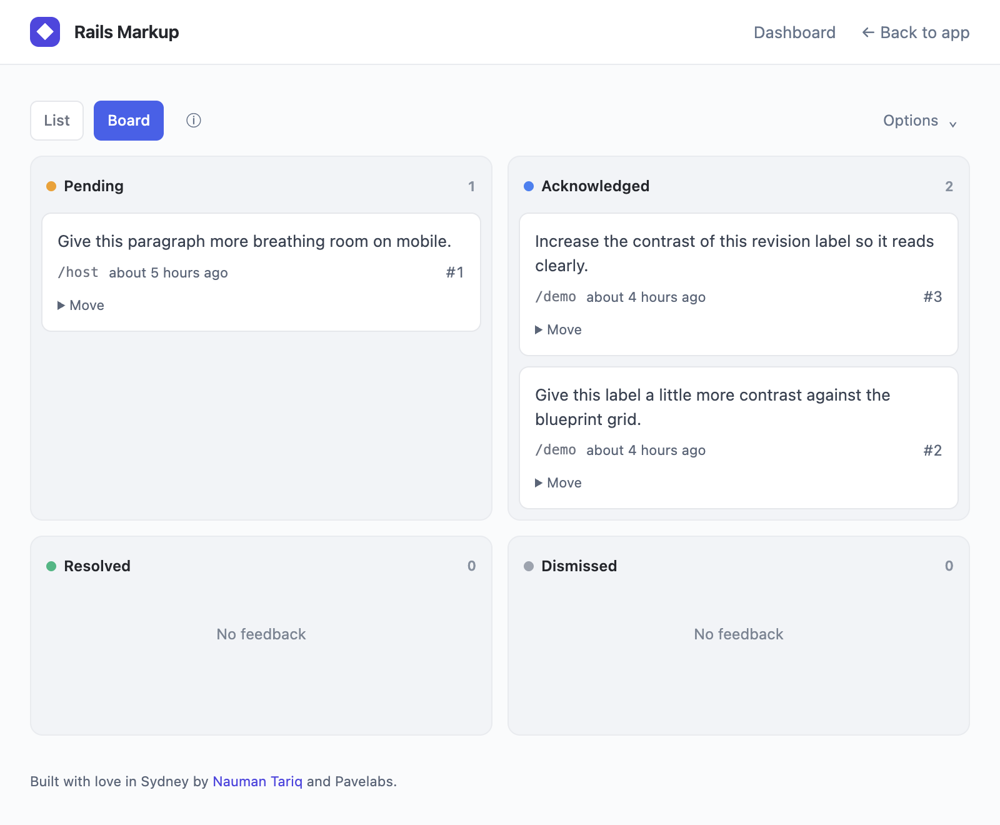
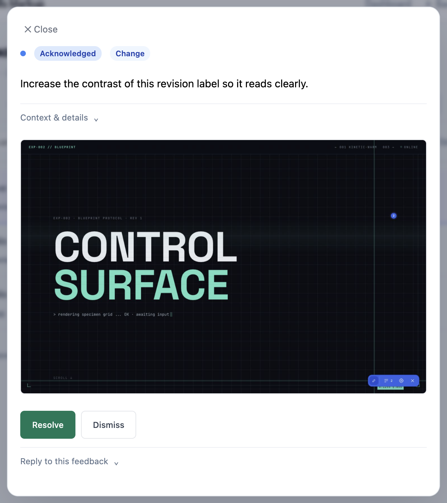
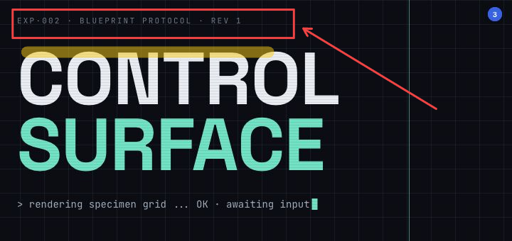

Rails engine · toolbar · MCP server · CLI
Version 1.5.0 · Early stage · Used by our team across our projects
Point-and-click annotation for AI agents.
Mark up your Rails views right in the browser. Connect your AI agent over MCP to read the feedback, make changes in your code, and reply or update its status.
Inside the app
Real captures from the Rails demo. Expand a step to see how feedback moves from the page to your dashboard.
01Toolbar · Point to what needs changing

02List · See what needs attention

03Board · Follow feedback through its status

04Feedback · Review the image and take action

05Image markup · Draw what you mean

Draw what you mean
An 18-second captioned demo: attach a screenshot, add a box, arrow and highlight, then review the saved feedback in the dashboard.
A captioned sequence of real app captures. Download MP4
See the workflow
A 38-second captioned walkthrough using a Kuickr design experiment in a local Rails app: leave feedback, attach an image, then review it in the list or board.
The loop
Feedback flows from your browser to your agent and back — no copy-pasting screenshots or describing where things are.
Annotate in the browser
Click an element and say what should change. Optionally capture, upload or paste an image, then add arrows & highlights. Review feedback in a shared modal from the compact list or board.
Agent reads over MCP
Your AI agent lists pending annotations through the MCP server and gets the exact element, page, and your note.
Fix & resolve
The agent edits the code and resolves the annotation with a summary — which syncs back to the pin and the dashboard.
What's in the box
One Ruby gem: a mounted engine with its own dashboard, a self-contained browser toolbar, an MCP server, and a CLI.
Floating annotation UI
Zero-dependency overlay — no Stimulus, no importmap. Configurable FAB (show/hide, size, 4 corners) that works in any Rails app.
Mounted engine interface
A compact list and drag-and-drop board share the same feedback modal. Search, filter, export, reply, and update status without losing your place.
Agent-native server
Read feedback, acknowledge or resolve it, add replies, and dismiss it over stdio MCP. Configure it in Claude Code, Codex, or another stdio MCP client. The standard HTTP proxy uses polling; watch is available only with the in-memory server.
Thor-based commands
rails-markup ships server, init, mcp, watch, pending, resolve, and more.
Server-backed state
Client UUIDs, an outbox with retries, and reconciliation keep the browser, the database, and your agent converged.
SQLite · MySQL · Postgres
Adapter-aware migrations and a configurable table name. Protect the dashboard through your host app's controller. The external MCP API uses a separate bearer token in production; development skips token authentication by default.
Install in three commands
Add the gem, run the generator, migrate. The generator mounts the engine, injects the toolbar, and writes an initializer.
gem "rails-markup", require: "rails_markup"
# then
bundle install
bin/rails generate rails_markup:install
bin/rails db:migrate
Configure the toolbar
| Option | Values | What it does |
|---|---|---|
fab_visible | true / false | Show or hide the entire floating dock. Pins and synchronization stay active; restore it from dashboard Options. |
toolbar_enabled | true / false | Master switch for the whole toolbar system. |
toolbar_position | bl / br / tl / tr | Which corner the FAB sits in. |
toolbar_size | slim / compact / default | 32 / 36 / 40px button. |
toolbar_accent | indigo / amber / blue / emerald / rose | Accent color for the UI. |
base_controller_class | "AdminController" | Parent controller that enforces auth. |